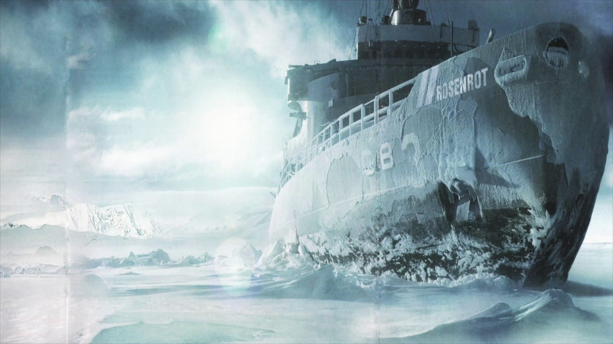

Best albums
-
"Herzeleid"
Herzeleid is the debut album by German Neue Deutsche Härte band Rammstein, first released on 25 September 1995 via Motor Music.

- Список пісень в альбомі
- "Wollt ihr das Bett in Flammen sehen?"
- "Der Meister"
- "Weisses Fleisch"
- "Asche zu Asche"
- "Seemann"
- "Du riechst so gut"
- "Das alte Leid"
- "Heirate mich"
- "Herzeleid"
- "Laichzeit"
- "Rammstein"
- "Wollt ihr das Bett in Flammen sehen?"
-
"Sehnsucht"
Sehnsucht is the second studio album by German Neue Deutsche Härte band Rammstein. It was released on 22 August 1997 through Motor Music in Europe and Slash Records in the United States. It is the only album entirely in German to be certified platinum by the RIAA in the US. The album peaked at No. 1 on the Austrian and German charts.
- Список пісень в альбомі
- "Sehnsucht"
- "Tier"
- "Bestrafe mich"
- "Du hast"
- "Bück dich"
- "Spiel mit mir"
- "Klavier"
- "Alter Mann"
- "Eifersucht"
- "Küss mich"
- "Sehnsucht"
-
"Mutter"
Mutter is the third album by German Neue Deutsche Härte band Rammstein. It was released on 2 April 2001 through Motor and Universal Music. The album's cover image is a photograph of a dead fetus, which was taken by Daniel & Geo Fuchs. The album has yielded six singles which, to date, are the most released from any Rammstein album.

- Список пісень в альбомі
- "Mein Herz brennt"
- "Links 2 3 4"
- "Sonne"
- "Ich will"
- "Feuer frei!"
- "Mutter"
- "Spieluhr"
- "Zwitter"
- "Rein raus"
- "Adios"
- "Nebel"
- "Mein Herz brennt"
-
"Reise, Reise"
Reise, Reise is the fourth studio album by Neue Deutsche Härte band Rammstein. It was released on 27 September 2004 through Universal Music in Germany and followed shortly by its release across Europe. It was later released in North America through Republic Records on 16 November 2004. Recorded in a span of two years at El Cortijo Studios in Málaga, Spain, the album was produced by the band themselves along with Swedish record producer Jacob Hellner.
- Список пісень в альбомі
- "Reise, Reise"
- "Mein Teil"
- "Dalai Lama"
- "Keine Lust"
- "Los"
- "Amerika"
- "Moskau"
- "Morgenstern"
- "Stein um Stein"
- "Ohne dich"
- "Amour"
- "Reise, Reise"
-
"Rosenrot"
Rosenrot is the fifth studio album by German Neue Deutsche Härte band Rammstein, released on 28 October 2005. The album includes six songs artistically omitted from Reise, Reise. The album's first title was Reise, Reise Volume Two, but on 18 August 2005 the album was announced as Rosenrot.The cover art is nearly identical to the Japanese import of Reise, Reise. The image is a slightly altered photograph of the icebreaker USS Atka, taken on 13 March 1960 at McMurdo Station, Ross Ice Shelf, Antarctica.
- Список пісень в альбомі
- "Benzin"
- "Mann gegen Mann"
- "Rosenrot"
- "Spring"
- "Wo bist du?"
- "Stirb nicht vor mir"
- "Zerstören"
- "Hilf mir"
- "Te quiero puta!"
- "Feuer und Wasser"
- "Ein Lied"
- "Benzin"
-
"Rammstein"
The untitled seventh studio album by German Neue Deutsche Härte band Rammstein, titled Rammstein (stylized in all caps) on digital platforms, was released on 17 May 2019 through Universal Music. Their first studio album in ten years, it is their first not to be produced by Jacob Hellner; it was instead produced by Emigrate guitarist Olsen Involtini, who also serves as Rammstein's live sound engineer.

- Список пісень в альбомі
- "Deutschland"
- "Radio"
- "Zeig dich"
- "Ausländer"
- "Sex"
- "Puppe"
- "Was ich liebe"
- "Diamant"
- "Weit weg"
- "Tattoo"
- "Hallomann"
Up
- "Deutschland"